หน้าแรก › ไอเทม
 อาหาร เครื่องดื่ม และยา ใช้ได้
อาหาร เครื่องดื่ม และยา ใช้ได้
วัตถุดิบอาหาร อาหารปรุง เครื่องดื่ม ยาป้องกันโรค และสีย้อม — ได้จากไหน ตัวอย่างพร้อมไอคอน
กินและดื่มเพื่อพลังงานและบัพ (การกินและดื่ม) · ปรุงเอง (การทำอาหาร) · อาหารสดเน่าตามเวลา (การถนอมอาหาร)
วัตถุดิบอาหาร
หาได้ 72 แบบ
| ชื่อ | เลเวลได้ถึง | ได้จาก | |
|---|---|---|---|
 | กาแฟบด | 70 | คราฟต์ (โต๊ะทำงาน) |
| กุ้งนาง | 70 | เก็บจาก ฝูงกุ้งนาง | |
| ข้าวโพด (อาหาร) | 70 | เก็บจาก ข้าวโพด | |
| ชีสบ่ม | 70 | คราฟต์ (โต๊ะทำงาน) | |
| ซากกิ้งก่า | 70 | สิ่งปลูกสร้างเก็บผลได้ · กับดัก | |
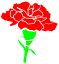 | ดอกคาร์เนชัน | 70 | เก็บจาก คาร์เนชัน |
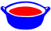 | น้ำซุปต้มกระดูก | 70 | คราฟต์ (ไฟประกอบอาหาร) |
| น้ำผึ้ง | 70 | เสบียงองค์กร | |
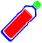 | น้ำมันธัญพืช | 70 | คราฟต์ (โต๊ะทำงาน) · เสบียงองค์กร |
| ปลาซิว | 70 | เก็บจาก ฝูงปลา · สิ่งปลูกสร้างเก็บผลได้ · เช็กชื่อ · สัตว์เลี้ยง | |
| ผลไม้เขตร้อน | 70 | เช็กชื่อ · เควส · เสบียงองค์กร | |
| มะพร้าว | 70 | เก็บจาก ต้นปาล์ม | |
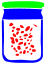 | ราที่บ่มเชื้อ | 70 | คราฟต์ (โต๊ะทำงาน) |
| หน่อ | 70 | เก็บจาก เฟิร์นรังนก | |
 | เนย | 70 | คราฟต์ (ไฟประกอบอาหาร) |
| เนื้อส่วนอก | 70 | เสบียงองค์กร | |
| เมล็ดสน | 70 | เก็บจาก สนเฟอร์แดง | |
| แป้งขนมปัง | 70 | คราฟต์ (โต๊ะทำงาน) | |
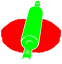 | แป้งพาย | 70 | คราฟต์ (โต๊ะทำงาน) |
| แผ่นห่อเกี๊ยว | 70 | คราฟต์ (ไฟประกอบอาหาร) |
อาหารปรุง
สูตรอาหารทั้งหมดอยู่ที่ การทำอาหาร · หาได้ 108 แบบ
| ชื่อ | เลเวลได้ถึง | ได้จาก | |
|---|---|---|---|
| อาหารจากเนื้อสัตว์ | 40 | คราฟต์ (ไฟประกอบอาหาร) | |
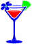 | ค็อกเทลวาร์ป | 60 | คราฟต์ (มือ) |
| ลูกพลับอบแห้ง | 60 | คราฟต์ (ราวตากผ้า) | |
| สเต็กเนื้อส่วนอก | 60 | คราฟต์ (ห้องครัวลาวา) | |
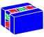 | แซนด์วิชผลไม้ | 60 | คราฟต์ (ครัวเกาะอารยธรรม) |
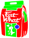 | การป้อนเพื่อเพิ่มพลังสูงสุด | 70 | ร้านค้า 10 T |
| ขนมปังยัดไส้ผัก | 70 | คราฟต์ (ไฟประกอบอาหาร) | |
| ซูชิ | 70 | คราฟต์ (เคาน์เตอร์ท็อป) | |
| บะหมี่ผัด | 70 | คราฟต์ (ไฟประกอบอาหาร) | |
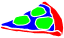 | พิซซ่าของคนรักเนื้อสัตว์ (ชิ้น) | 70 | คราฟต์ (ไฟประกอบอาหาร) |
 | สลัด | 70 | คราฟต์ (โต๊ะทำงาน) |
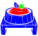 | อาหารเพิ่มความเร็วสำหรับสัตว์กินพืช | 70 | คราฟต์ (ไฟประกอบอาหาร) |
| อาหารเพิ่มผลผลิตแบบรวดเร็ว | 70 | ร้านค้า 50 T | |
| อาหารเพิ่มพลังโจมตีสำหรับสัตว์กินพืช | 70 | คราฟต์ (ไฟประกอบอาหาร) | |
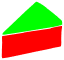 | เค้ก | 70 | คราฟต์ (ไฟประกอบอาหาร) |
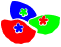 | โมจิ | 70 | คราฟต์ (ไฟประกอบอาหาร) |
เครื่องดื่ม
หาได้ 12 แบบ
| ชื่อ | เลเวลได้ถึง | ได้จาก | |
|---|---|---|---|
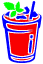 | ชานมเผือก | 60 | คราฟต์ (โต๊ะทำงาน) |
| ชาแจสมิน | 60 | คราฟต์ (ไฟประกอบอาหาร) | |
| [กิจกรรม] ยาฟื้นฟูความเหนื่อยล้า | 70 | มินิเกม | |
| กาแฟกลั่น | 70 | คราฟต์ (ไฟประกอบอาหาร) | |
| กาแฟดัตช์ | 70 | คราฟต์ (ตัวกรอง) | |
| ชาดำ | 70 | คราฟต์ (ไฟประกอบอาหาร) | |
| ชาเขียว | 70 | คราฟต์ (ไฟประกอบอาหาร) | |
| น้ำกระบองเพชร | 70 | คราฟต์ (โต๊ะทำงาน) | |
| น้ำผลไม้ | 70 | คราฟต์ (โต๊ะทำงาน) | |
| น้ำผัก | 70 | คราฟต์ (โต๊ะทำงาน) | |
| ยาฟื้นฟูความเหนื่อยล้า | 70 | ร้านค้า 150 T | |
| สำหรับฟื้นฟูความเหนื่อยล้า | 70 | ร้านค้า 60 T |
ยาและสีย้อม
ยาป้องกันโรค/พิษ ทำที่ ห้องทดลองทางการแพทย์ · สีย้อมและสารฟอกทำที่ โต๊ะทำการย้อม · ผลของบัพและสถานะดูที่ บัพและสถานะผิดปกติ · หาได้ 30 แบบ
| ชื่อ | เลเวลได้ถึง | ได้จาก | |
|---|---|---|---|
| ข้าวต้มแมลง | 60 | คราฟต์ (ไฟประกอบอาหาร) | |
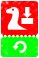 | ตั๋วทำลายสายใยสัตว์ | 60 | ร้านค้า 30 T |
| ยาแก้น้ำมันพิษ | 60 | คราฟต์ (มือ) | |
| ย้อมสีขาว | 60 | ร้านค้า (กล่องสุ่ม) | |
| ย้อมสีแดง | 60 | ร้านค้า (กล่องสุ่ม) | |
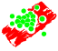 | รากไม้แก้ปวด | 60 | คราฟต์ (ห้องทดลองทางการแพทย์) |
| สารฟอกจากเปลือกไข่ | 60 | คราฟต์ (โต๊ะทำการย้อม) | |
| สีย้อม | 60 | คราฟต์ (โต๊ะทำการย้อม) | |
| ชาสมุนไพร | 70 | เช็กชื่อ · เควส · เสบียงองค์กร | |
| ยาชะลออายุสัตว์ (15 วัน) | 70 | ร้านค้า (แพ็ก) | |
| ยาชะลออายุสัตว์ (60 วัน) | 70 | ร้านค้า 300 T | |
| ยาป้องกันก๊าซพิษ | 70 | คราฟต์ (ห้องทดลองทางการแพทย์) | |
| ยาป้องกันพิษกิ้งก่า | 70 | คราฟต์ (ห้องทดลองทางการแพทย์) | |
| ยาป้องกันพิษแมลง | 70 | คราฟต์ (ห้องทดลองทางการแพทย์) | |
| ยาป้องกันอาการผื่น | 70 | คราฟต์ (ห้องทดลองทางการแพทย์) | |
| ยาป้องกันอาการเลือดตกใน | 70 | คราฟต์ (ห้องทดลองทางการแพทย์) | |
| ยาสังหารสัตว์ | 70 | คราฟต์ (โต๊ะทำงาน) | |
 | ยาสำหรับสัตว์ | 70 | คราฟต์ (ไฟประกอบอาหาร) · เช็กชื่อ |
| สารย้อมสีจากถ่าน | 70 | คราฟต์ (โต๊ะทำการย้อม) | |
| สารย้อมสีจากสารส้ม | 70 | คราฟต์ (โต๊ะทำการย้อม) |
ของกินสำเร็จรูปจากร้านค้า
หาได้ 7 แบบ
| ชื่อ | เลเวลได้ถึง | ได้จาก | |
|---|---|---|---|
| [กิจกรรม] ยาฟื้นฟูความเหนื่อยล้า | 70 | มินิเกม | |
| ขนมปังกรอบ | 70 | ร้านค้า 10 T | |
| ยาฟื้นฟูความเหนื่อยล้า | 70 | ร้านค้า 150 T | |
| ยาฟื้นฟูสุขภาพชั้นดี | 70 | ร้านค้า 21 T | |
| สำหรับฟื้นฟูความเหนื่อยล้า | 70 | ร้านค้า 60 T | |
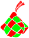 | เกอตูปัต | 70 | ร้านค้า (แพ็ก) |
| ไซแลคติน-Z | 70 | เสบียงองค์กร |